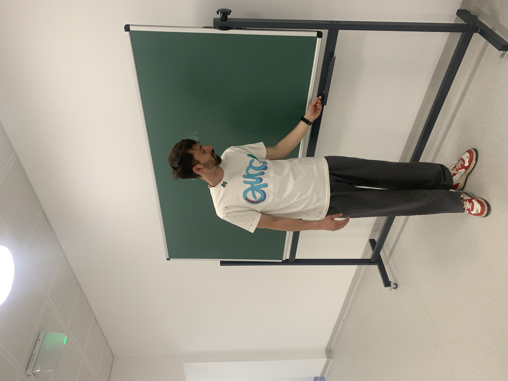

Sebastiano Thei
Assistant Professor at IMPAN (Warsaw) Institute of Mathematics of the Polish Academy of Sciences
(2026-)
Office hours: Tuesdays 13:00-15:00, Thursdays 10:30-12:30
Email: sthei at impan dot pl
I am an assistant professor at IMPAN (Warsaw) working on set theory.
Papers and preprints
- On the Intermediate Models of Strongly Compact Prikry Forcing with T. Benhamou and B. Weltsch
submitted
[arXiv]
- A Note on a Theorem of Apter with R. Mohammadpour and O. Rajala
submitted
[arXiv]
- Combinatorics in Higher Solovay Models with A. Poveda
submitted
[arXiv]
- Higher Solovay Models with C. Straffelini
submitted
[arXiv]
- The Baire and perfect set properties at singulars cardinals with V. Dimonte and A. Poveda
accepted
[arXiv]
- No cardinal correct inner model elementarily embeds into the universe with G. Goldberg
Journal of Mathematical Logic
[arXiv] [journal]
- Singular cardinals through the lens of Shelah's pcf theory and Prikry-type forcings
PhD thesis
[IRIS] [abstract]
Invited Talks